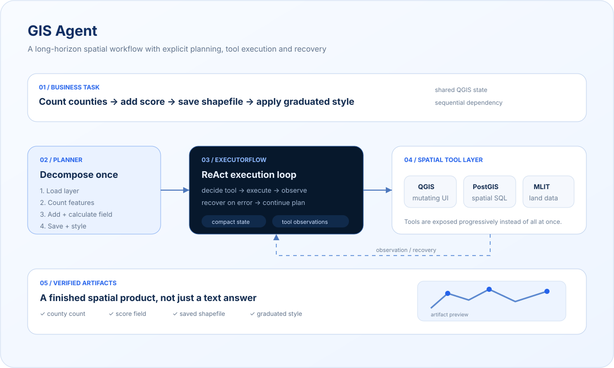

GIS
Agent
面向 GIS 场景的多步 Agent 系统，将 QGIS、MCP Server、PostgreSQL/PostGIS 与大模型推理结合，用于灾害预警、土地价格、洪涝风险、人口流动等日本国土数据分析任务。
- Role
- 设计负责人
- Period
- 2025.08 – 2026.03
- Runtime
- Planner · ExecutorFlow · Orchestrator · Answer
- Tools
- QGIS MCP · MLIT MCP · PostGIS
Turning natural-language intent into long-horizon GIS work.
GIS Agent 面对的不是单次工具调用，而是需要规划、执行、检查、恢复并最终产出真实空间数据文件的长链路任务。Planner 负责把目标拆成稳定步骤；ExecutorFlow 在每一步内进行 ReAct 推理和工具执行，QGIS/PostGIS/MLIT 等能力按需暴露。

Building a controllable GIS execution loop.
- 01
多智能体 Agent Runtime 设计
设计 Planner、ExecutorFlow、Orchestrator、Answer 的 GIS 多步任务框架，并加入 human-interaction 节点。ExecutorFlow 采用 ReAct 范式，支持分步推理、工具调用、观察读取与错误恢复。
- 02
MCP 工具链接入
接入 QGIS MCP Server 与 MLIT MCP Server，打通 GIS 工具调用、国土数据查询与空间分析链路，并结合 PostgreSQL/PostGIS 处理结构化空间数据。
- 03
Skill 渐进式披露
在 Planner 阶段按需暴露 GIS 工具能力，避免大量工具一次性进入模型上下文，降低工具过载带来的选择错误并提升复杂任务拆解稳定性。
- 04
上下文与错误管理
设计工具调用记录、错误信息沉淀与人机交互反馈机制，使长链路任务在失败后能够获得可恢复的状态与澄清信息。
- 05
复杂任务执行
在未进行模型微调的情况下，通过 Prompt Engineering + Tool Use 支持 20+ 工具步骤的 GIS 分析任务。
- 06
Harness 经验沉淀
从 GIS Agent 中总结工具可见性控制、MCP 工具合约、失败恢复和 Trace 记录等模式，并迁移到后续通用 Agent Harness 与 GGAI 设计中。
Designed for long, tool-heavy spatial tasks.
GIS Agent 让工具选择、上下文、失败恢复和 Trace 从“实现细节”变成核心系统问题，这些经验直接推动了后续通用 Runtime 与 Agent Harness 的设计。